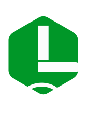

Overview
Purpose
At De-Tom's Rafting Company, our purpose is to ignite your passion for adventure and foster a deep connection with nature through exhilarating whitewater rafting experiences. We are dedicated to: Delivering Unforgettable Adventures: Crafting thrilling rafting journeys that cater to all skill levels, from novice floaters to seasoned adventurers, ensuring every trip is a unique and memorable experience.
- Ensuring Safety and Excellence: Providing the highest standards of safety with our expert guides, state-of-the-art equipment, and rigorous training programs, so you can focus on the thrill of the ride, knowing you're in safe hands.
- Promoting Environmental Stewardship: Educating and inspiring our guests about the importance of river conservation and environmental sustainability, fostering a collective commitment to protect and preserve our natural waterways.
- Building Community and Team Spirit: Creating opportunities for team-building, personal growth, and camaraderie through group adventures that strengthen bonds and encourage teamwork.
- Supporting Local Economies: Contributing to the vitality of our local communities by promoting tourism, creating jobs, and collaborating with local businesses to provide comprehensive and enriching experiences.
Join us at De-Tom's Rafting Company and embark on a journey where adventure meets nature, safety meets excitement, and every moment is crafted to inspire and exhilarate. Discover the rush of the rapids, the beauty of the wilderness, and the joy of shared experiences on the river with us.
Audience
Our target audience consists of adventure seekers, nature lovers, and outdoor enthusiasts of varying ages and experience levels, including:
Adventure Enthusiasts: Individuals and groups looking for thrilling and adrenaline-pumping outdoor activities.
Families and Vacationers: Families seeking fun and engaging activities during their vacations or weekend getaways.
Corporate Teams and Organizations: Companies and organizations interested in team-building exercises and group adventures.
Are you an experienced rafter looking for your next adventure?Answer: Yes, I have been rafting for years and love the thrill of navigating challenging rapids. I’m always on the lookout for new and exciting rivers to conquer. Our website offers detailed information on advanced rafting trips that cater to experienced rafters, complete with rapid classifications and trip descriptions that promise an adrenaline rush.
Are you planning a family vacation and looking for activities that everyone can enjoy?Answer: Yes, we’re planning a family vacation and want activities that are safe and fun for all ages. Our website features family-friendly rafting trips with calm waters and beautiful scenery, perfect for creating unforgettable memories together. We provide safety gear and expert guides to ensure a safe and enjoyable experience for everyone.
Are you a corporate manager seeking a unique team-building activity for your employees?Answer: Yes, I’m organizing a corporate retreat and want a team-building activity that will encourage teamwork and communication. Our website showcases custom rafting packages designed for corporate teams, offering activities that promote collaboration and camaraderie. We provide professional facilitators and tailored experiences to meet your team-building goals.
Branding
Website Logo
Style Guide
Color Palette
#029929 primary-color
#E2DEDE secondary-color
#34AD55 accent1-color
#019729 accent2-color
Color Palette LinkTypography
Fonts Used- Outfit
- Poppins
Headings Example Font
Example text - OutfitNormal Text/Paragraph Example Font
Example text - Poppins
Colored Callout Example Font
Example text - Poppins
Navigation
Wireframes
Home Page Wireframe

About Us Page Wireframe